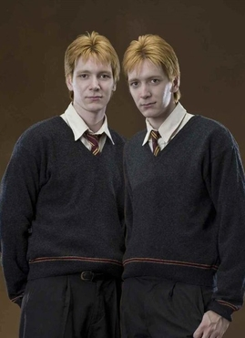

Fact 1: In Harry Potter the weasleys are known for having their signature red hair.
Fact 2: The family lives in a house called "The Burrow" out in rural England in the book.
Fact 3: In the book the Weasley family effectively becomes Harry's adopted family
Ron Weasley
In the books, Ron Weasley is one of the three main characters alongside Harry and Hermione. Ron is known as Harry's best friend throughout the series and plays key roles in each book. In the Weasley family, he is the youngest boy and the second youngest of all the children.

Fred and George Weasley
Fred and George are often seen as the practical jokers of the series. In the first part of the series, they often help the main characters, Harry, Ron, and Hermione. Later in the series, they open their own joke shop, making a lot of money and helping raise themselves economically in the wizarding world as the Weasley family was considerd less wealthy. However, in the final Battle of Hogwarts, Fred dies in one of the most tragic and heartbreaking scenes in the entire series.
Ginny Weasley
Ginny Weasley is the youngest child in the Weasley family and the only daughter. She is a key character in the second book of the series, really important to the story. She often is seen throughout the series and acts as a supporting character who assists Harry, Ron, and Hermione throughout the books. In the end, Ginny and Harry get married and have three children. She also becomes a professional Quidditch player at the end of the series.